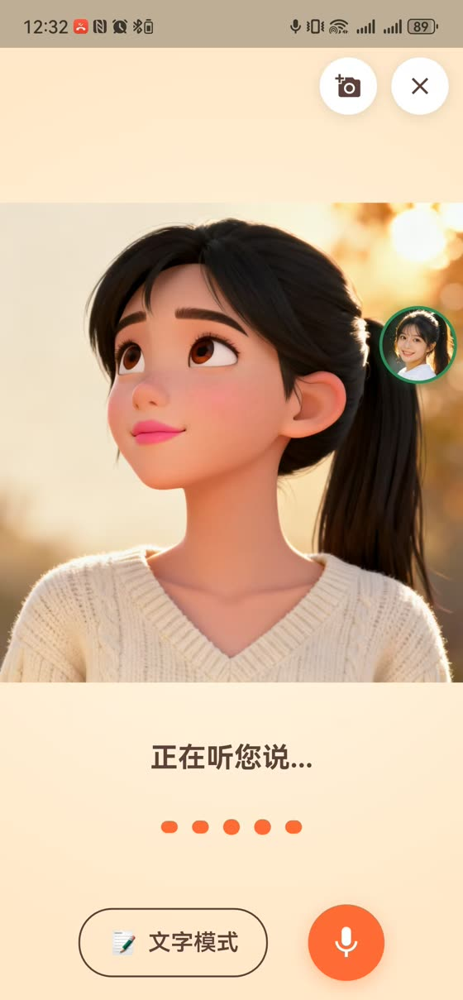
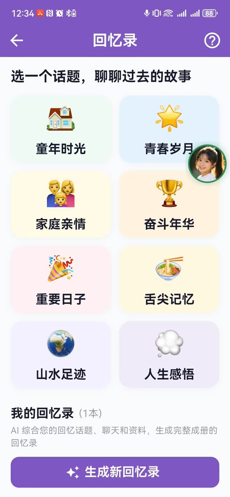
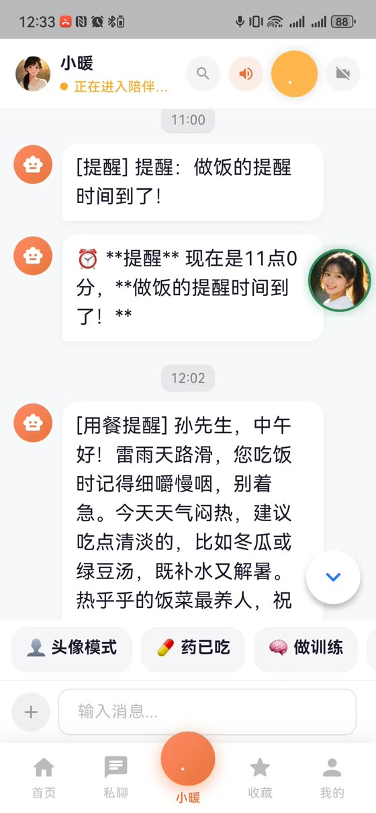

一件事
上次，我们聊了「我的一天」。
今天，讲一件我正在做的事。
今天，我想向大家
介绍一位新朋友。
小暖
一个会陪老人说话的 AI。
她不是概念图。
她已经跑在手机上了。
真实测试画面。今日安排、紧急呼叫、用药管理、回忆录，
都已经在孙先生的手机里了。
她会做三件事。
慢慢说的话、带口音的话、说到一半停下来想一想的话。
上次聊过什么、孙子叫什么、您不爱吃什么。
不只是回答问题，还会主动问一句「后来怎么样了」。
这三件事，长这样。



1.5 秒
从您说完，到她开口。
再慢一点，老人就会觉得「她没在听」，
然后提高音量，再说一遍。
为什么做这件事？
起点不是一行代码，
是身边的老人。
孤独不是新闻里的词，是每次回家都看得见的事。
看得见，又放不下，这就是一个真问题。
“好的照顾，是让被照顾者
更少地需要照顾。”
这句话，是小暖的全部设计原则。
我没有想做一个产品。
我只是想解决一个自己的问题。
这是今天最想传递的第一个信念：
最好的起点，不是「市场需要什么」，是「我放不下什么」。
秘密不在代码里
很多人以为：
“你是搞技术的，
所以你才做得出来。”
代码，几乎都不是我写的。
是 AI 写的。
我用的工具叫编程助手（Claude Code）。
你说清楚要什么，它来写、来改、来验证。
我真正做的，是三件事。
给谁用、解决什么、做成什么样。写成文字，写不清就是没想清。
让 AI 施工队一来就有水有电有路，这是今天的重点。
方向对不对、结果好不好用，这件事 AI 替代不了你。
所谓「环境」，
就是一套自己的小基建。
搭一次，处处用。
我的网站、小暖、文章的配音配图、
还有今天这份幻灯片，跑的都是同一套底座。
做新的一件事，不是从零开始，是从地图上取件组装。
这套东西，
不是为工程师准备的。
是为有想法的人准备的。
回到那个循环
一个真问题 → 自己先用 → 确认有价值 → 分享给更多人
今天这场分享，就是我这个循环的最后一环。
如果你想开始，只需三步。
你的真问题。写给谁看都行，先写给自己。
把写下的东西交给编程助手，看它给你盖出第一版。
用，它就长大；不用，就趁早放手。这是唯一的检验。
你不需要先成为工程师。
你只需要认真对待一个自己的问题。
One more thing
今天这份幻灯片，
和我手里的讲稿，
也都是 AI 做的。从想法到上线，两个晚上。
如果它能做到，你的那件事，也能。
留给大家的问题：
你想做成的一件事，
是什么？
文章与项目记录：tommickey.cn